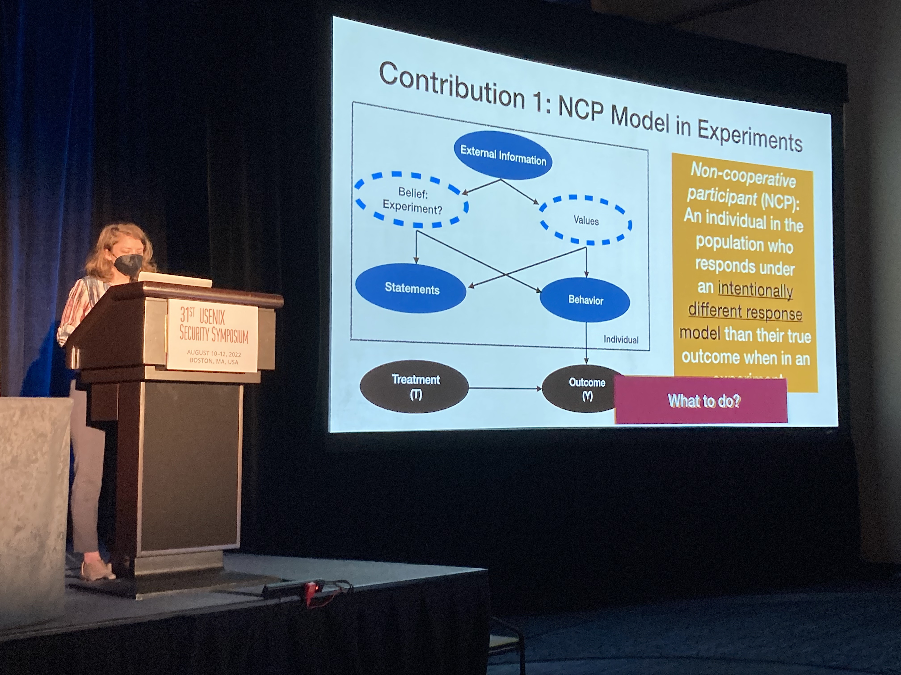

Last week, Kaleigh Clary presented her work, Stick it to the Man: Correcting for Non-Cooperative Behavior of Subjects in Experiments on Social Networks at USENIX Security. One of the things I really like about this work is the focus on analysis and implications of non-cooporative actors in network experiments from a PL/systems perspective.

The problem this work addresses

One of the core contributions of this paper is a statistical correction for adversarial behavior with respect to experimentation in a networked (e.g., social media) environment. To see why corrections are both necessary and non-trivial, let's first consider the more typical view of experimentation. Suppose you participate in psychological and market research studies you find on Craigslist for cash. You are certain that you are in an "experiment" of some kind upon starting the study and that your actions are being observed and will be analyzed; none of this should be surprising.
Now, there may be some circumstances under which you do not participate in good faith. Maybe you disagree with the motivation behind the study. Maybe upon arrival you realize the experimenters are asking more from you than you're willing to give but it's not enough to quit and lose the cash. Maybe you've done a lot of these experiments and think it would be fun to mess the researchers. Maybe there are reasons only known to you. No matter what the reason, you decide to do something different, e.g., act randomly, lie, give the opposite answer from what you think they want.
In an experiment or study of a sufficient size, we would not expect such non-cooperative behavior to have a significant effect, so long as each actor behaves independently. The idea is that each individual's non-cooperative behavior will be distributed iid throughout the population, making that behavior tantamount to noise.
Of course, the iid assumption is a rather strong one. There are two major cases where this could be a problem:
- When participants coordinate their behavior and
- When a single non-cooporative participant's behavior influences unsuspecting participants be revealing information about their treatment or their response.
The former is the traditional purview of a security conference; its statistical correction involves removing those participants from the population. This is a bummer, since it affects statistical power, but ultimately post-hoc detection isn't so bad.
The latter is what Kaleigh's work is about. In the former case, once we classify and remove a non-cooporative participants from the sample, we're done. However, in the latter case, there is a kind of leakage to unsuspecting participants due to the experimental design — Kaleigh has talked about this as a kind of Sybil attack.
So what about the experimental design causes this leakage? Well, often in experiments in a networked setting one cannot simply assign individuals to experimental conditions at random due to the fact that participants interact with each other, violating what's known as SUTVA (but what the casual, non-causal computer science reader can think of as a kind of interference). The idea is that participants may be clustered into strongly connected communities such that random assignment of experimental treatment to individuals in those communities won't work — due to the connectedness, some participants may actually be exposed to both their own experimental treatment and someone else's! Under such a circumstance, we would need to throw out this data, since we cannot separate the effect of one condition versus another.
To address this issue, researchers use what's called cluster random assignment where, instead of assigning experimental conditions at random for each individual, they assign experimental conditions at random for each community (i.e., everyone in the same community gets the same assignment). This is great because it increases power. This is not so great because it makes such designs more vulnerable to adversarial or non-cooporative behavior — a participant with high connectivity within the community cluster can have outsized influence on the quality of the data collected.
Kaleigh's work developed a statistical correction for this bias, but it also showed how vulnerable communities are to well-connected non-cooporative actors. In fact, it takes surprisingly few non-cooperating nodes having the right network placement (i.e., connectivity) to render an experiment essentially useless.
Implications for PL researchers
Online social networks are important platforms not only for social science researchers, but also for systems researchers broadly, including folks interested in PL. Platforms don't just enable socialization, but also the exchange of ideas, goods, and services — i.e., resources. They are increasingly being seen as execution environments where high-stakes automated transactions happen.
The future of these platforms is one where policies that govern human behavior may be generated programmatically. Interpretable DSLs for platform policies are one way we might do this responsibly and experimentation will be critical for the development and automation of such policies. Thus understanding threat models to experimentation is of paramount importance.
Kaleigh's work addresses the vulnerability of a particular experimental design to attack. An experimental design is a particular procedure or policy for assigning treatment to experiment participants and is often associated with a family of estimators for an outcome of interest. What I find fascinating about Kaleigh's work is how it illustrates the tradeoff between a design that increased power by reducing variability, but came at a cost vis a vis its vulnerability to attack.
Ethics
One line of inquiry that came up repeatedly during the conference were questions from security researchers about protecting vulnerable populations. There was an implicit question about why we should help platforms like Facebook collect data on users. Our position is twofold: (1) the alternative to experimentation is policy by fiat, which is probably not so good, and (2) experimentation is a method and should be thought of as a separate concern from data collection, privacy, and transparency. What platforms do with experimental data is a different question from how they experiment.
A major unspoken concern is folks' discomfort with deception. Unfortunately for end-users, many experimental questions rely on deception — or at least asymmetry in information.
Our position is that there are better ways to build trust with end-users and obtained informed consent to participate in experimentation — this is a platform-level policy issue, not one that can be solved via statistical correction. To that end, I look forward to relaying what Erin McBride has been working on this summer in a future blog post!
Future posts on this topic
Here are some forward links to future blog posts on this topic. Feel free to tag @AppliedPL on Twitter if you would like to see one of these sooner rather than later!
- Story of this paper's genesis
- Breakdown of the estimators
- Web demonstration of the analysis
- Relationship to related work published recently